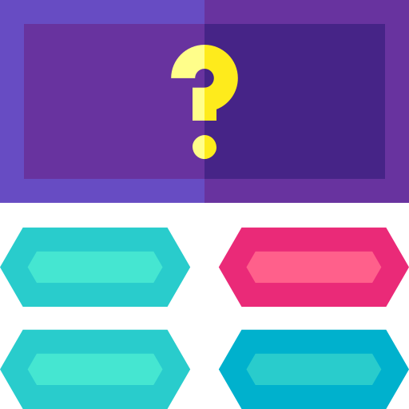

Consigli utili e facili
Mettiti alla prova!

Approfondimento sulla netiquette
Cittadinanza digitale
La cittadinanza digitale è la capacità di usare Internet, dispositivi e servizi online in modo consapevole, sicuro e responsabile. È l’equivalente della “cittadinanza” nel mondo reale, ma applicata al mondo digitale.
Scopri di più